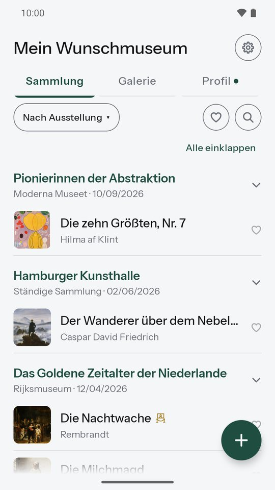
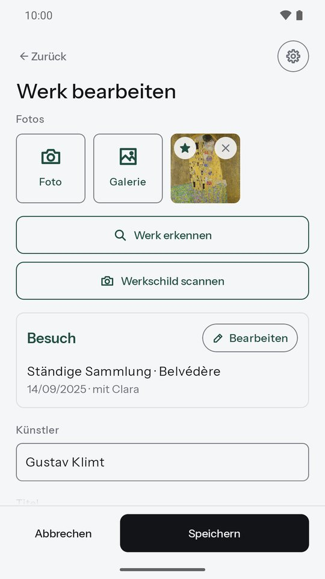
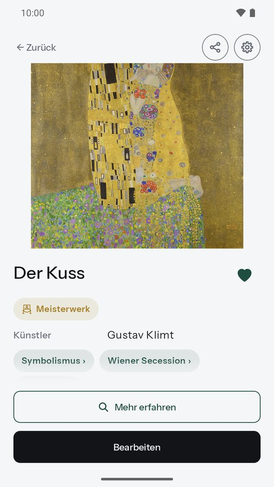
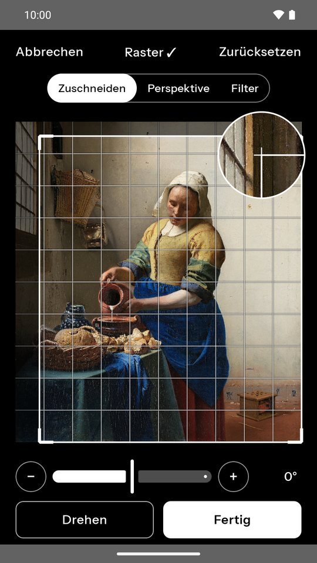
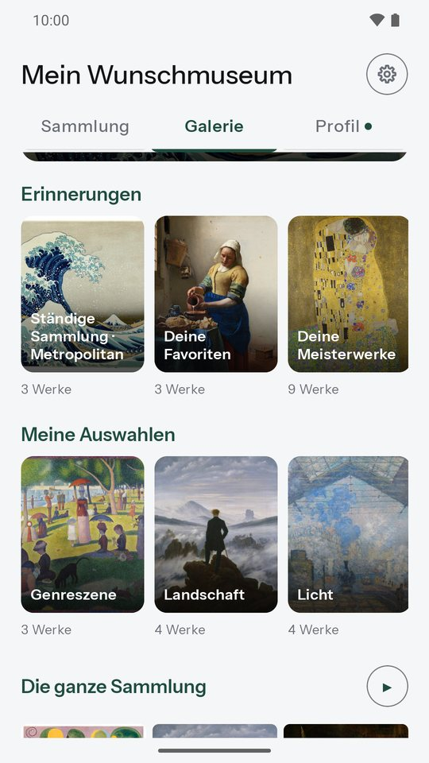
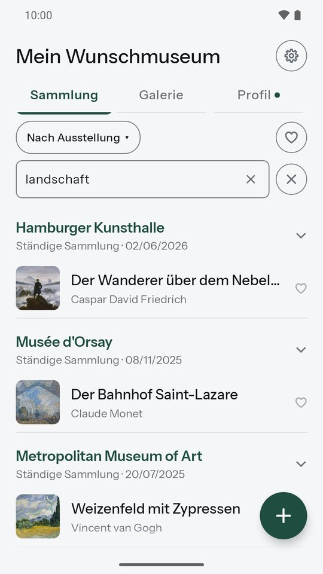
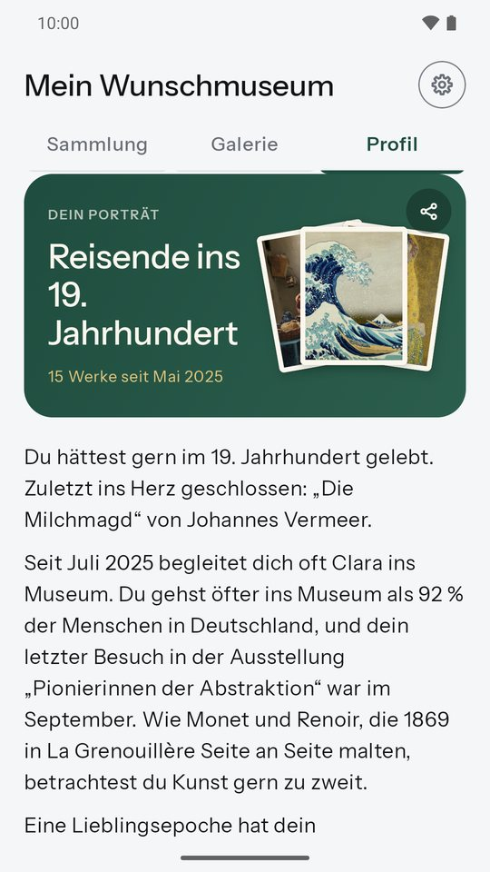
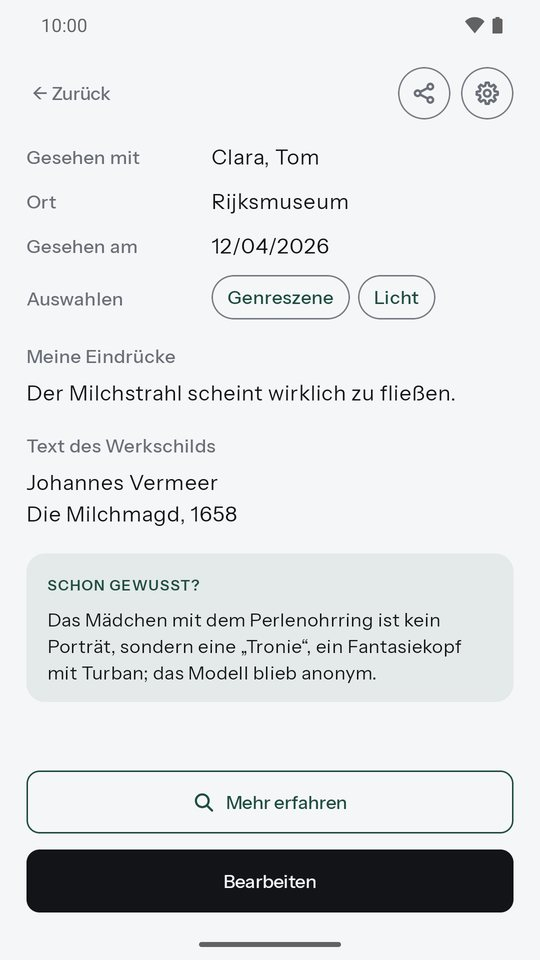
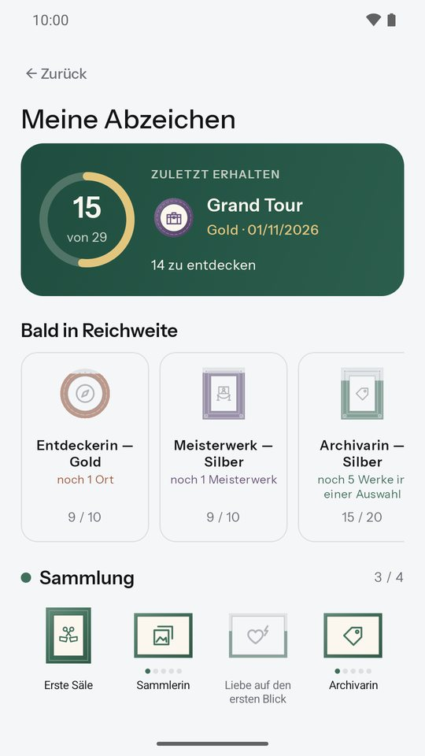
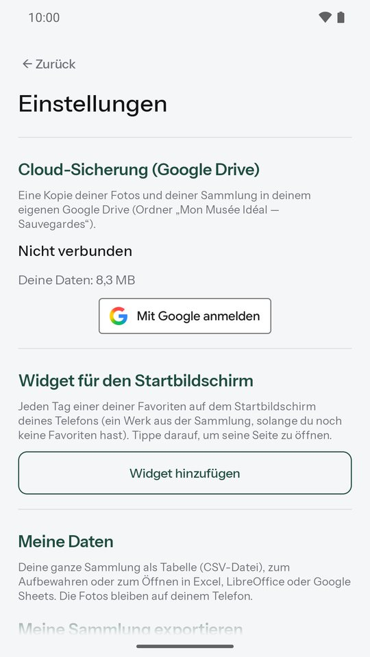

Mein Wunschmuseum
Halte die Werke fest, die dich berührt haben.
Ein Werk in einer Ausstellung hat dich berührt? Fotografiere es, notiere, was es in dir auslöst, und finde es jederzeit wieder. Mein Wunschmuseum ist dein persönliches Museumsnotizbuch: einfach und ohne Konto.
Bald bei Google PlayKostenlose Android-App · in sechs Sprachen

Alles, was du brauchst, nicht mehr
Ein Werk in Sekunden hinzufügen
Fotografiere das Werk oder importiere es aus deiner Galerie. Scanne das Werkschild, vor Ort oder von einem Foto: Die App liest den Text und schlägt Künstler und Titel vor, direkt auf deinem Handy. Der Künstlername wird beim Tippen vorgeschlagen, Tippfehler werden erkannt; beim Titel seine berühmten Werke. Ein unbekanntes Werk? „Werk erkennen“ findet es mit Google Lens. Ausstellung, Ort, Datum und Begleitung werden von Werk zu Werk übernommen. Abends fügst du alle Fotos auf einmal hinzu: ein Werk pro Foto, datiert nach den Fotos.

Deine Favoriten, mit einem Tippen
Tippe auf das Herz eines Werks, in der Liste oder auf seiner Seite, und es gehört zu deinen Favoriten. Neben der Suche zeigt ein Filter nur sie, weiter nach Ausstellung, Datum, Ort oder Künstler sortiert. Dein Wunschmuseum auf einen Blick.
Behalte, was dir wichtig ist
Deine Eindrücke, der Text des Werkschilds, deine eigenen Auswahlen wie „Wiedersehen“. Mehrere Fotos pro Werk, leicht zuzuschneiden oder zu drehen, und dein Lieblingsmuseum als Vorschlag. Ein Widget zeigt jeden Tag ein Werk deiner Sammlung auf dem Startbildschirm.

Museumsfotos, bearbeitet
Im Museum aufgenommene Fotos sind oft schief oder schlecht beleuchtet. Schneide präzise mit der Lupe zu, richte die Perspektive gerade und lass die „Museum-Automatik“ das Licht der Säle korrigieren. Das alte Foto wird erst ersetzt, wenn du die Bearbeitung bestätigst.

Deine Galerie
Alle deine Werke im Großformat, wie an den Wänden eines Museums: jeden Tag ein Werk des Tages, Erinnerungen, für dich zusammengestellt (deine Favoriten, dein Lieblingskünstler, deine Stilrichtungen, deine Besuche mit einem lieben Menschen…), deine eigenen Auswahlen per langem Druck und eine Diashow, um sie zu zeigen.

Alles schnell wiederfinden
Deine Sammlung nach Ausstellung, Datum, Ort oder Künstler sortiert, und eine Suche in all deinen Texten: Titel, Künstler, Ausstellung, Ort, Eindrücke, Werkschild. Einklappbare Abschnitte und ein langer Druck, um eine ganze Ausstellung oder mehrere Werke auf einmal zu bearbeiten.

Dein Kunstporträt
Das Profil zeichnet dein Porträt, das mit deinen Besuchen wächst: dein Lieblingskünstler, dein Lieblingsmuseum, deine Museumsbegleitung, wie oft du ins Museum gehst im Vergleich zum Durchschnitt in Deutschland, und deine Werke nach Künstler, Stilrichtung, Epoche und Ort. Tippe auf eine Stilrichtung, um ihre Geschichte und deine Werke zu entdecken. Teile dein Porträt als Bild, ohne die Namen deiner Begleitung.

Schon gewusst?
Über 900 geprüfte Anekdoten über Künstler und Museen: auf den Seiten deiner Werke, in deinem Porträt und jeden Tag oben in deiner Sammlung. Dazu über 240 Stilrichtungen, in wenigen Zeilen vorgestellt. Der Milchstrahl der „Milchmagd“, Picassos Tauben in Barcelona…

Abzeichen zum Sammeln
Grand Tour, Vier Jahreszeiten, Lange Nacht der Museen, Alleskönnerin… 29 Abzeichen, die du beim Besuchen sammelst, als kleine Gemälde, deren Rahmen von Bronze bis Diamant immer prächtiger wird, jedes mit einer Anekdote aus der Kunstgeschichte. Alle sind vorab sichtbar, und deine nächsten Ziele zeigen, welche in Reichweite sind.

Deine Daten gehören dir
Alles bleibt auf deinem Handy. Kein Konto, keine Werbung. Wenn du willst, eine Sicherung in deinem eigenen Google Drive, mit Wiederherstellung auf einem neuen Handy; du kannst sie in der App löschen. Und deine ganze Sammlung lässt sich als Tabelle exportieren.

Auf einen Blick
Deine Privatsphäre zuerst
- Kein Konto: Wir wissen nicht, wer du bist.
- Deine Fotos und Notizen bleiben auf deinem Handy, nie auf unseren Servern.
- Keine Werbung, kein Datenverkauf.
- Das Werkschild wird auf deinem Handy gelesen.
Eine Frage, eine Idee?
Schreib uns: artory.app@gmail.com